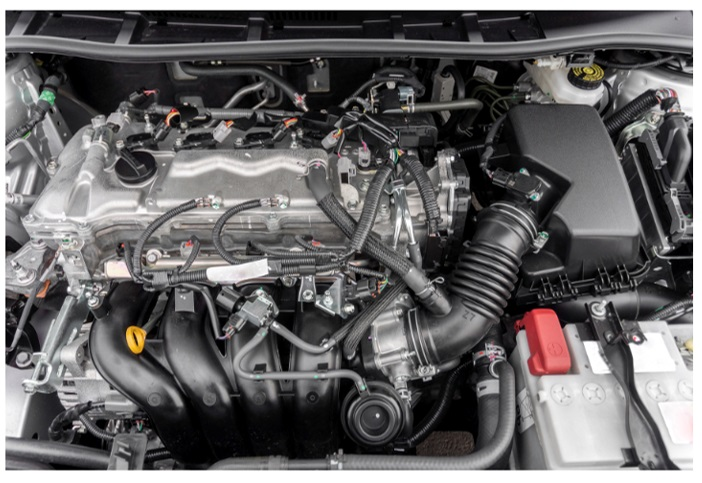
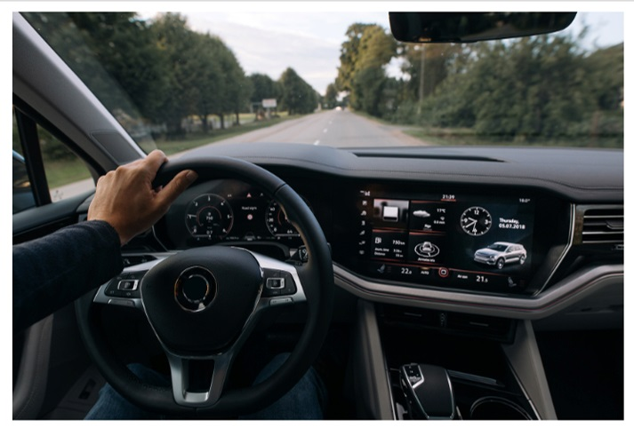
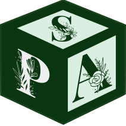

Tidyverse

tidyr
Hay tres reglas interrelacionadas que hacen que un conjunto de datos se considere en formato tidy :
- Cada variable debe tener su propia columna.
- Cada observación debe tener su propia fila.
- Cada valor debe tener su propia celda.


pivot_wider()
# A tibble: 344 × 9
species island bill_length_mm bill_depth_mm flipper_length_mm year male
<fct> <fct> <dbl> <dbl> <int> <int> <int>
1 Adelie Torgersen 39.1 18.7 181 2007 3750
2 Adelie Torgersen 39.5 17.4 186 2007 NA
3 Adelie Torgersen 40.3 18 195 2007 NA
4 Adelie Torgersen NA NA NA 2007 NA
5 Adelie Torgersen 36.7 19.3 193 2007 NA
6 Adelie Torgersen 39.3 20.6 190 2007 3650
7 Adelie Torgersen 38.9 17.8 181 2007 NA
8 Adelie Torgersen 39.2 19.6 195 2007 4675
9 Adelie Torgersen 34.1 18.1 193 2007 NA
10 Adelie Torgersen 42 20.2 190 2007 NA
# ℹ 334 more rows
# ℹ 2 more variables: female <int>, `NA` <int>pivot_longer()
# A tibble: 1,032 × 8
species island bill_length_mm bill_depth_mm flipper_length_mm year sex
<fct> <fct> <dbl> <dbl> <int> <int> <chr>
1 Adelie Torgersen 39.1 18.7 181 2007 male
2 Adelie Torgersen 39.1 18.7 181 2007 female
3 Adelie Torgersen 39.1 18.7 181 2007 NA
4 Adelie Torgersen 39.5 17.4 186 2007 male
5 Adelie Torgersen 39.5 17.4 186 2007 female
6 Adelie Torgersen 39.5 17.4 186 2007 NA
7 Adelie Torgersen 40.3 18 195 2007 male
8 Adelie Torgersen 40.3 18 195 2007 female
9 Adelie Torgersen 40.3 18 195 2007 NA
10 Adelie Torgersen NA NA NA 2007 male
# ℹ 1,022 more rows
# ℹ 1 more variable: body_mass_g <int>

